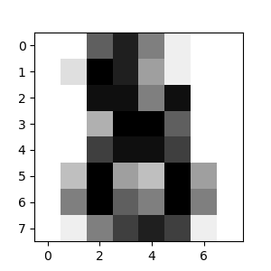

An introduction to machine learning with scikit-learn#
Machine learning: the problem setting#
In general, a learning problem considers a set of n samples of data and then tries to predict properties of unknown data. If each sample is more than a single number and, for instance, a multi-dimensional entry (aka multivariate data), it is said to have several attributes or features.
Learning problems fall into a few categories:
supervised learning, in which the data comes with additional attributes that we want to predict (Click here to go to the scikit-learn supervised learning page).This problem can be either:
classification: samples belong to two or more classes and we want to learn from already labeled data how to predict the class of unlabeled data. An example of a classification problem would be handwritten digit recognition, in which the aim is to assign each input vector to one of a finite number of discrete categories. Another way to think of classification is as a discrete (as opposed to continuous) form of supervised learning where one has a limited number of categories and for each of the n samples provided, one is to try to label them with the correct category or class.
regression: if the desired output consists of one or more continuous variables, then the task is called regression. An example of a regression problem would be the prediction of the length of a salmon as a function of its age and weight.
unsupervised learning, in which the training data consists of a set of input vectors x without any corresponding target values. The goal in such problems may be to discover groups of similar examples within the data, where it is called clustering, or to determine the distribution of data within the input space, known as density estimation, or to project the data from a high-dimensional space down to two or three dimensions for the purpose of visualization (Click here to go to the Scikit-Learn unsupervised learning page).
Loading an example dataset#
scikit-learn comes with a few standard datasets, for instance the
iris and digits
datasets for classification and the diabetes dataset for regression.
In the following, we start a Python interpreter from our shell and then
load the iris and digits datasets. Our notational convention is that
$ denotes the shell prompt while >>> denotes the Python
interpreter prompt:
$ python
>>> from sklearn import datasets
>>> iris = datasets.load_iris()
>>> digits = datasets.load_digits()
A dataset is a dictionary-like object that holds all the data and some
metadata about the data. This data is stored in the .data member,
which is a n_samples, n_features array. In the case of supervised
problems, one or more response variables are stored in the .target member. More
details on the different datasets can be found in the dedicated
section.
For instance, in the case of the digits dataset, digits.data gives
access to the features that can be used to classify the digits samples:
>>> print(digits.data)
[[ 0. 0. 5. ... 0. 0. 0.]
[ 0. 0. 0. ... 10. 0. 0.]
[ 0. 0. 0. ... 16. 9. 0.]
...
[ 0. 0. 1. ... 6. 0. 0.]
[ 0. 0. 2. ... 12. 0. 0.]
[ 0. 0. 10. ... 12. 1. 0.]]
and digits.target gives the ground truth for the digit dataset, that
is the number corresponding to each digit image that we are trying to
learn:
>>> digits.target
array([0, 1, 2, ..., 8, 9, 8])
Learning and predicting#
In the case of the digits dataset, the task is to predict, given an image, which digit it represents. We are given samples of each of the 10 possible classes (the digits zero through nine) on which we fit an estimator to be able to predict the classes to which unseen samples belong.
In scikit-learn, an estimator for classification is a Python object that
implements the methods fit(X, y) and predict(T).
An example of an estimator is the class sklearn.svm.SVC, which
implements support vector classification. The
estimator’s constructor takes as arguments the model’s parameters.
For now, we will consider the estimator as a black box:
>>> from sklearn import svm
>>> clf = svm.SVC(gamma=0.001, C=100.)
The clf (for classifier) estimator instance is first
fitted to the model; that is, it must learn from the model. This is
done by passing our training set to the fit method. For the training
set, we’ll use all the images from our dataset, except for the last
image, which we’ll reserve for our predicting. We select the training set with
the [:-1] Python syntax, which produces a new array that contains all but
the last item from digits.data:
>>> clf.fit(digits.data[:-1], digits.target[:-1])
SVC(C=100.0, gamma=0.001)
Now you can predict new values. In this case, you’ll predict using the last
image from digits.data. By predicting, you’ll determine the image from the
training set that best matches the last image.
>>> clf.predict(digits.data[-1:])
array([8])
The corresponding image is:
As you can see, it is a challenging task: after all, the images are of poor resolution. Do you agree with the classifier?
A complete example of this classification problem is available as an example that you can run and study: Recognizing hand-written digits.
Conventions#
scikit-learn estimators follow certain rules to make their behavior more predictive. These are described in more detail in the Glossary of Common Terms and API Elements.
Type casting#
Where possible, input of type float32 will maintain its data type. Otherwise
input will be cast to float64:
>>> import numpy as np
>>> from sklearn import kernel_approximation
>>> rng = np.random.RandomState(0)
>>> X = rng.rand(10, 2000)
>>> X = np.array(X, dtype='float32')
>>> X.dtype
dtype('float32')
>>> transformer = kernel_approximation.RBFSampler()
>>> X_new = transformer.fit_transform(X)
>>> X_new.dtype
dtype('float32')
In this example, X is float32, and is unchanged by fit_transform(X).
Using float32-typed training (or testing) data is often more
efficient than using the usual float64 dtype: it allows to
reduce the memory usage and sometimes also reduces processing time
by leveraging the vector instructions of the CPU. However it can
sometimes lead to numerical stability problems causing the algorithm
to be more sensitive to the scale of the values and require
adequate preprocessing.
Keep in mind however that not all scikit-learn estimators attempt to
work in float32 mode. For instance, some transformers will always
cast their input to float64 and return float64 transformed
values as a result.
Regression targets are cast to float64 and classification targets are
maintained:
>>> from sklearn import datasets
>>> from sklearn.svm import SVC
>>> iris = datasets.load_iris()
>>> clf = SVC()
>>> clf.fit(iris.data, iris.target)
SVC()
>>> list(clf.predict(iris.data[:3]))
[0, 0, 0]
>>> clf.fit(iris.data, iris.target_names[iris.target])
SVC()
>>> list(clf.predict(iris.data[:3]))
['setosa', 'setosa', 'setosa']
Here, the first predict() returns an integer array, since iris.target
(an integer array) was used in fit. The second predict() returns a string
array, since iris.target_names was for fitting.
Refitting and updating parameters#
Hyper-parameters of an estimator can be updated after it has been constructed
via the set_params() method. Calling fit() more than
once will overwrite what was learned by any previous fit():
>>> import numpy as np
>>> from sklearn.datasets import load_iris
>>> from sklearn.svm import SVC
>>> X, y = load_iris(return_X_y=True)
>>> clf = SVC()
>>> clf.set_params(kernel='linear').fit(X, y)
SVC(kernel='linear')
>>> clf.predict(X[:5])
array([0, 0, 0, 0, 0])
>>> clf.set_params(kernel='rbf').fit(X, y)
SVC()
>>> clf.predict(X[:5])
array([0, 0, 0, 0, 0])
Here, the default kernel rbf is first changed to linear via
SVC.set_params() after the estimator has
been constructed, and changed back to rbf to refit the estimator and to
make a second prediction.
Multiclass vs. multilabel fitting#
When using multiclass classifiers,
the learning and prediction task that is performed is dependent on the format of
the target data fit upon:
>>> from sklearn.svm import SVC
>>> from sklearn.multiclass import OneVsRestClassifier
>>> from sklearn.preprocessing import LabelBinarizer
>>> X = [[1, 2], [2, 4], [4, 5], [3, 2], [3, 1]]
>>> y = [0, 0, 1, 1, 2]
>>> classif = OneVsRestClassifier(estimator=SVC(random_state=0))
>>> classif.fit(X, y).predict(X)
array([0, 0, 1, 1, 2])
In the above case, the classifier is fit on a 1d array of multiclass labels and
the predict() method therefore provides corresponding multiclass predictions.
It is also possible to fit upon a 2d array of binary label indicators:
>>> y = LabelBinarizer().fit_transform(y)
>>> classif.fit(X, y).predict(X)
array([[1, 0, 0],
[1, 0, 0],
[0, 1, 0],
[0, 0, 0],
[0, 0, 0]])
Here, the classifier is fit() on a 2d binary label representation of y,
using the LabelBinarizer.
In this case predict() returns a 2d array representing the corresponding
multilabel predictions.
Note that the fourth and fifth instances returned all zeroes, indicating that
they matched none of the three labels fit upon. With multilabel outputs, it
is similarly possible for an instance to be assigned multiple labels:
>>> from sklearn.preprocessing import MultiLabelBinarizer
>>> y = [[0, 1], [0, 2], [1, 3], [0, 2, 3], [2, 4]]
>>> y = MultiLabelBinarizer().fit_transform(y)
>>> classif.fit(X, y).predict(X)
array([[1, 1, 0, 0, 0],
[1, 0, 1, 0, 0],
[0, 1, 0, 1, 0],
[1, 0, 1, 0, 0],
[1, 0, 1, 0, 0]])
In this case, the classifier is fit upon instances each assigned multiple labels.
The MultiLabelBinarizer is
used to binarize the 2d array of multilabels to fit upon. As a result,
predict() returns a 2d array with multiple predicted labels for each instance.